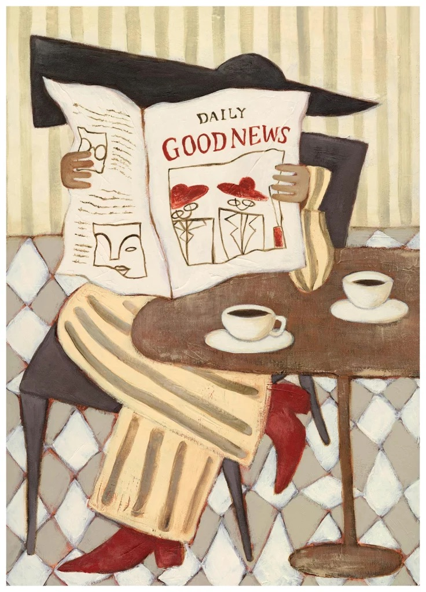
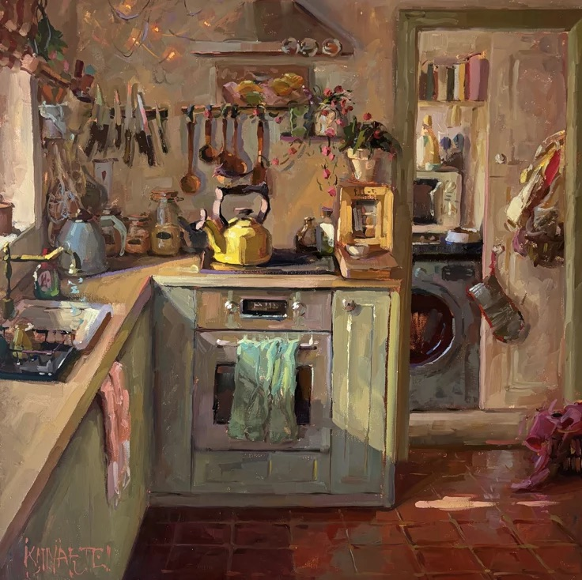
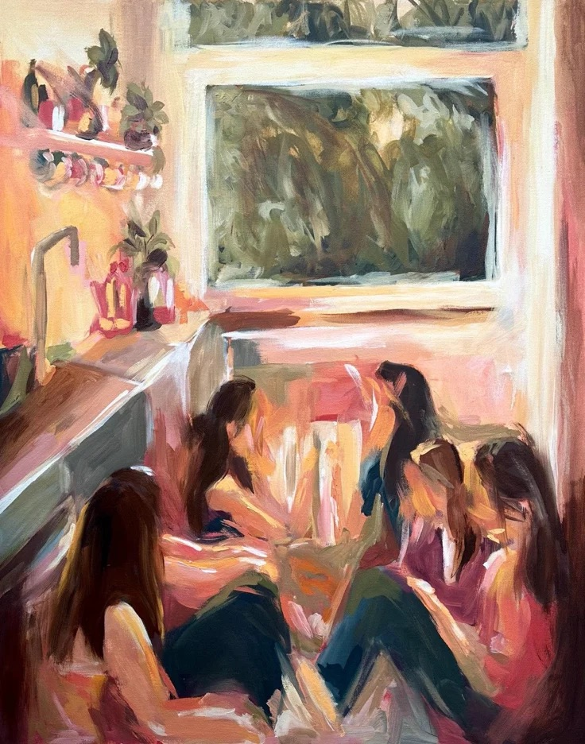
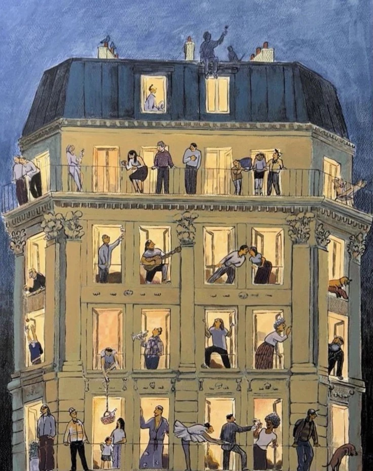

Designing a Home That Helps You Feel Like Yourself
From lighting and layout to objects with meaning, the spaces we live in quietly shape who we become and how we move through everyday life.
Your home does not need to look finished to feel intentional. In your 20s, a room often becomes a kind of emotional map — part survival space, part studio, part landing place for every version of yourself you are still trying to understand.

Designing a space that feels like you begins with paying attention to how you actually live. Maybe you need a chair by the window because mornings feel better with light. Maybe your desk needs to face away from your bed because rest and ambition have started to blur together. Maybe the objects on your shelf matter less because they match and more because they remind you of where you have been.
A personal space is not built all at once. It is collected slowly through thrifted lamps, half-read books, mismatched mugs, soft blankets, framed photos, and the quiet realization that comfort is not the same thing as perfection.

When a home helps you feel like yourself, it gives you permission to exist without performing. It supports your rituals, reflects your taste, and makes room for the person you are becoming next.
